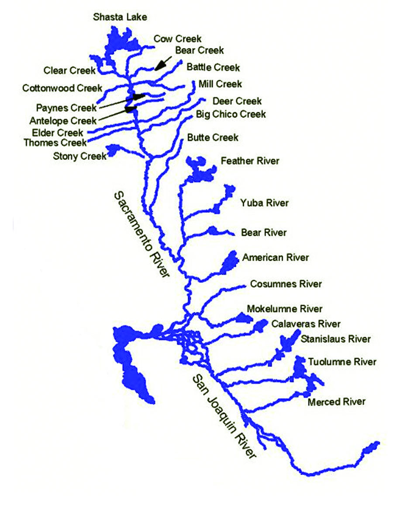

Water rafting brief history
Water rafting, also known as whitewater rafting, has a rich history that dates back centuries. Originating from indigenous cultures using rafts for transportation and trade, water rafting evolved into a popular recreational activity in the mid-19th century. European explorers and settlers began navigating rivers for fun and adventure, leading to the development of modern rafting techniques and equipment. In the mid-20th century, commercial outfitters started offering guided rafting trips, making the sport more accessible to the public. Today, water rafting is a global phenomenon, with enthusiasts seeking out thrilling rapids and breathtaking scenery in destinations around the world. The history of water rafting showcases its evolution from a practical means of travel to an exhilarating outdoor adventure enjoyed by people of all ages.

California Rivers
California is a paradise for water rafting enthusiasts, with numerous rivers offering a variety of experiences for rafters of all skill levels. The American River, particularly the South Fork, is a popular choice for beginners and families looking for a fun and scenic rafting trip. For more experienced rafters seeking adrenaline-pumping rapids, the Middle and North Forks of the American River provide challenging runs with Class IV and V rapids. The Kern River in the southern Sierra Nevada is another top destination for whitewater rafting in California, known for its thrilling rapids and beautiful surroundings. The Merced River, flowing through Yosemite Valley, offers a more relaxed rafting experience with stunning views of the iconic national park. Other notable rivers for rafting in California include the Trinity River in Northern California, known for its remote wilderness and exciting rapids. With its diverse range of rivers, California provides endless opportunities for unforgettable water rafting adventures.
